Arobot’s muscles are almost always its motors. Put simply, a motor is an electromechanical device that rotates a shaft when an electric current is applied to it. There are many kinds of motors, but the particular type of motor normally used for robotics is the DC (direct current) motor.
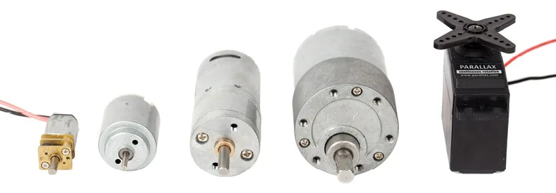
DC Motors
The most fundamental thing you need to understand about DC motors is that electromagnetic forces cause DC motors to spin. When power is applied to the motor’s terminals, the motor shaft spins in one direction.
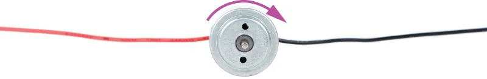
When you reverse the power wires to the terminals, the motor shaft spins in the opposite direction. This is because when you reverse the power to an electromagnet, the magnetic fields created inside the motor are also reversed.
H-Bridges
If you want to change the direction a motor is spinning using a switch, you need to create a circuit called an H-bridge, which is simply a circuit that allows a motor’s direction to be reversed.
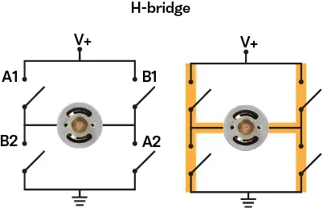
A basic H-bridge consists of two pairs of single-pole single-throw (SPST) switches. One pair is located between each motor terminal and the voltage source, and one pair is located between each motor terminal and ground. When you draw this out on paper, you’ll notice it looks a bit like an H, which is how this circuit got its name.
When the set of switches labeled “A” is closed, power flows through the motor in such a way that it spins clockwise. When the other set, labeled “B,” is closed, power flows in the opposite direction, and the motor spins counterclockwise.
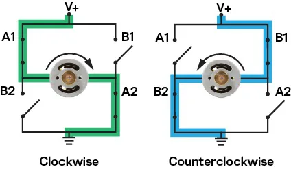
Both sets of switches cannot be closed at the same time. If you do this, power will be connected directly to ground, and you’ll have just created the dreaded short circuit discussed in the previous chapter.
In addition, if you mix and match the switches, such as by closing A1 and B2, you’ll also create a short circuit. It is important that only the “A” switches get closed or, alternatively, the “B” switches. There should never be some combination of the two.
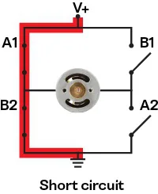
Obviously, having to toggle four different switches is impractical and can lead to mistakes. Fortunately, you can replace all four SPST switches in the circuit with a single double-pole double-throw (DPDT) switch. With a DPDT switch, you can create the most basic H-bridge circuit imaginable.
When the DPDT switch is toggled one way, the motor will spin clockwise, and when it is toggled the opposite way, the motor will reverse and spin counterclockwise.
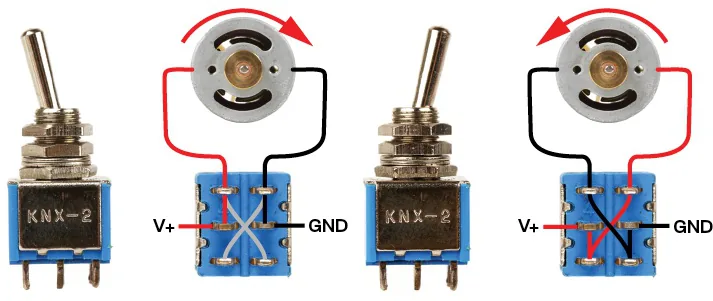
To build your first H-bridge switch, solder the red wire from a 3 × AA battery holder to one of the center pins on your DPDT switch and the black wire to the other center pin (see Chapter 4 for detailed soldering instructions).
Next, select one of the pairs of outer pins. Solder a red motor wire to the switch terminal in line with the center pin that has the red battery holder wire attached. Then solder a black motor wire to the other outer pin.
Now when the switch is toggled, the motor is either powered by the battery pack and spinning clockwise or doing nothing at all.
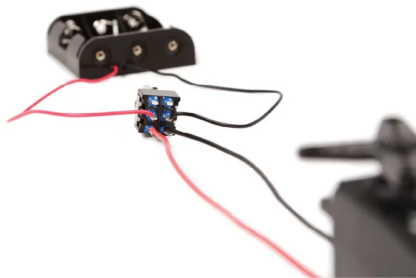
That’s a positive first step, but remember, you actually want the motor to change direction when the switch is toggled, not turn off. To make this happen, you need to figure out a way to reverse the power to the motor.
Reversing Power to the Motor
To make the H-bridge fully functional, you need to wire the switch’s remaining pins in such a way as to reverse the power to the motor. All you need to do is make a crisscrossed wire connection from the unused outer pair of switch terminals to the terminals connected to the motor.
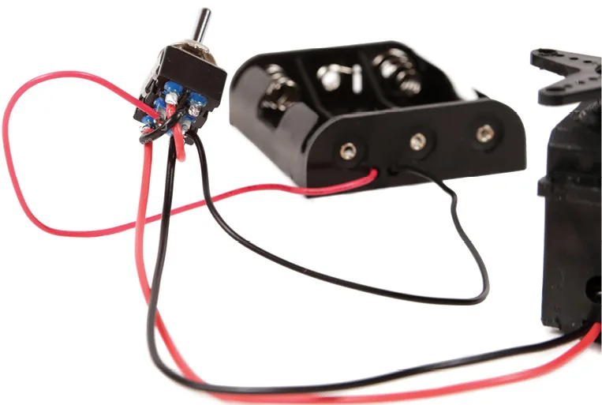
When the switch is toggled to make this connection, the black wire from the battery pack is connected to the red wire from the motor, and the red wire from the battery pack gets connected to the black wire from the motor. By crisscrossing the wires, you have effectively flipped the power supply to the motor when the switch is toggled.
The H-bridge A1 and A2 connections are the first set of terminals connected directly to the motor. The B1 and B2 connections on the H-bridge are the other outer terminals where the crisscrossed wires are connected when the switch is flipped.
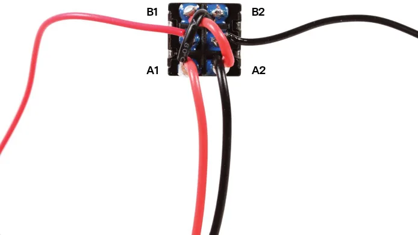
Adjusting the Motor’s Speed
Now that you understand how to adjust the motor’s direction, you’ll adjust its speed. Although there are many ways to control motor speed, the easiest method is to change the amount of voltage you are applying. The more voltage you apply to a motor, the faster it spins.
However, if you apply too much voltage, the coils inside the motor will overheat, the protective coating on the coils will melt, the wires will short, and the motor will stop working. Therefore, it is important to know what the maximum voltage rating is for a motor so that you don’t overheat it and release the “magic smoke.”
If you don’t know what the operating voltage is, you can guess using the very scientific method of trial and error. Start with a small voltage supply of 3 V and gradually increase the amount of electricity. If either the motor or batteries get so hot that you can’t touch them, you’re giving the motor too much voltage. Let things cool down and use the previous power supply that you tested before it began to heat up.
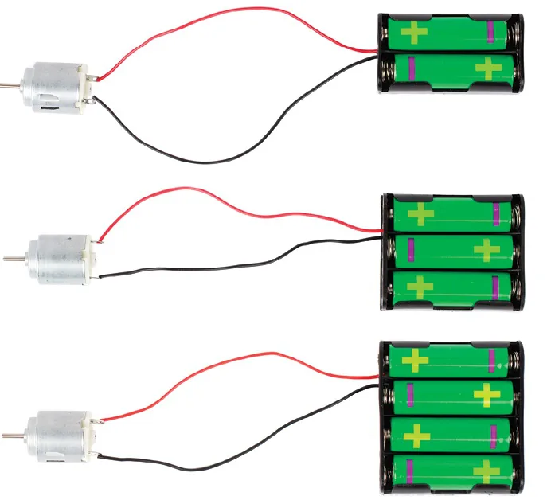
Although you can change the speed of the motor by applying more or less power, a better way to change the output speed of a motor is to use an additional gearbox. Many motors come with gearboxes attached to speed up or slow down the output speed.
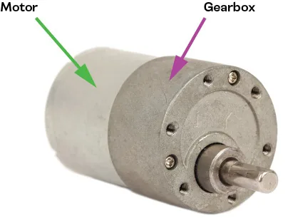
Servo Motors
A servo motor is a type of geared motor that has an electronic controller board inside. You can use a circuit board called a microcontroller (a kind of minicomputer) to talk to its controller board and control its rotation.
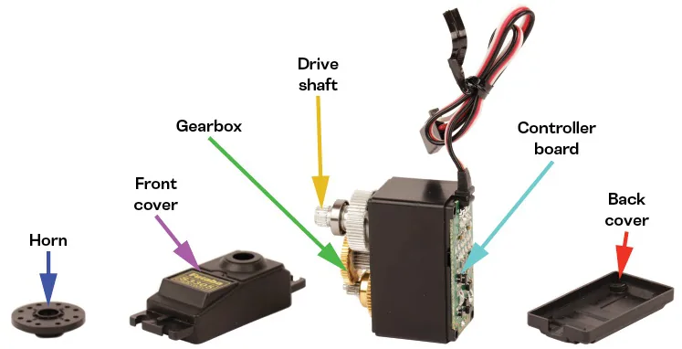
In this book, you’ll be modifying servo motors to run off batteries without a microcontroller. To do this, you’ll remove the controller board and connect a power and ground wire directly to the motor. You’ll notice these servos have only two colored wires coming out of them instead of three.
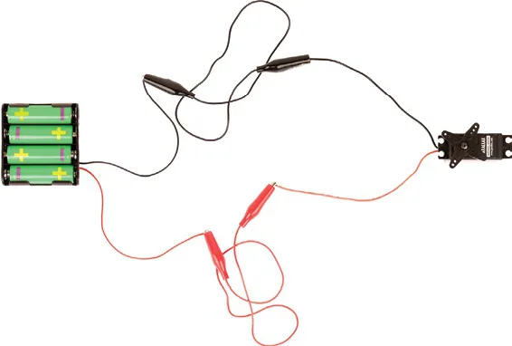
However, before you start modifying the servos, it is important to understand a few things about them. First, while they look nearly identical, there is a big difference between a standard servo and a continuous servo.
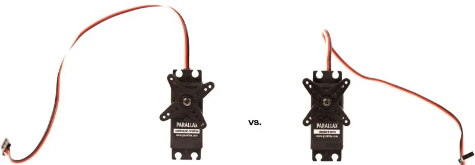
A standard servo cannot rotate in a full circle. A microcontroller is necessary to send the servo a signal that tells it to rotate to a certain position, usually some value between 0º and 180º. In fact, there is even a physical stop inside the gearbox that prevents the drive shaft from making a complete rotation.
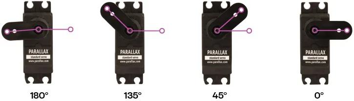
Continuous servos can spin in full, continuous circles (hence the name). They cannot be told to travel to a particular degree around the circle. Instead of controlling the servo’s specific position, the microcontroller is used to send a signal that controls the speed at which the servo rotates. Since a continuous-rotation servo does not have a physical stop in the gearbox, it’s the best type of servo for you to remove the controller board and modify to run directly off a battery pack.
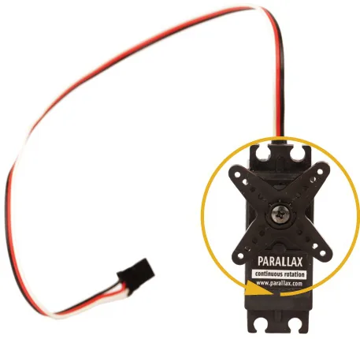
Servos come in a range of sizes. The most common size of servo, and the one you’ll use throughout this book, is “standard” size. Don’t confuse standard-size servos with standard operation servos. You’ll exclusively be using a standard-size servo that operates in continuous rotation.
Some continuous-rotation servos also come in micro size. Those servos are too weak to work on the projects in this book. They’re small (not much bigger than a quarter) and often come in a clear blue case.
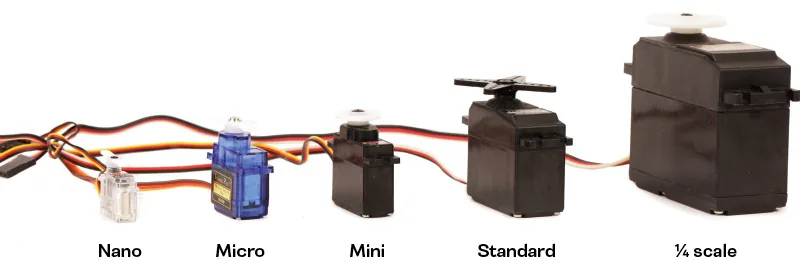
You may be wondering why you’re going to be modifying a servo instead of just buying a geared DC motor.
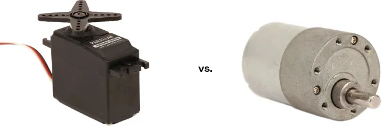
For starters, hobby servos operate in the range of 3 V to 6 V and can easily be powered by common battery packs ranging from 2 × AA to 4 × AA batteries.
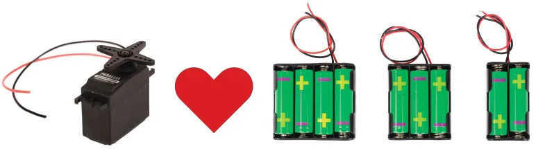
Standard continuous-rotation servos always tend to be the same size and always have the same mounting tabs. This makes them universal to build with and easily attachable to other objects without the need for specialized mounting hardware.
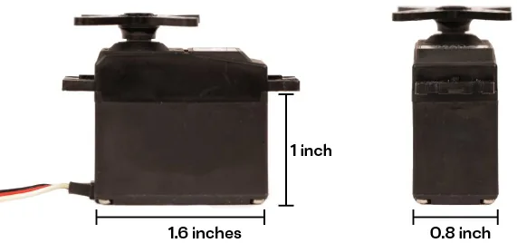
The servo also has a part that attaches to its rotating shaft called a horn. The many different horn shapes and attachments for servo motors make it easy to fasten items to the servo’s rotating shaft. Zip-tying something to a servo horn is infinitely easier than attaching something to the rotating shaft of a generic geared DC motor.
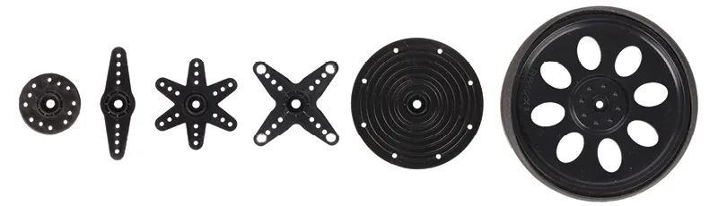
Nonmodified servos are used in more advanced robotics with microcontrollers. Because all standard-size servo motors are uniform in size and have the same mounting holes, it’s easy to later swap out the servos and convert the robots made in this book so they can be controlled by a microcontroller like an Arduino.
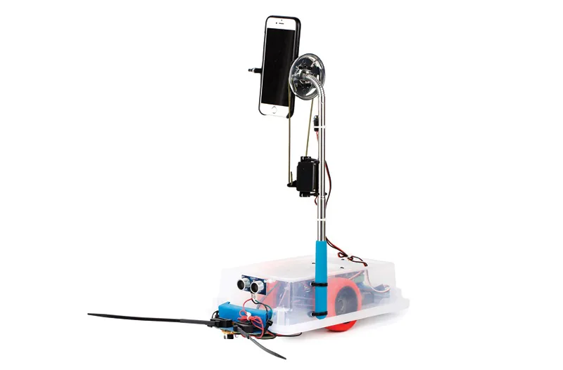
The one downside to modified servos is that they can be a pain in the neck to modify if you are new to electronics, but you’ll gain all the necessary skills to do it when you learn to solder in the next chapter. Unfortunately, as of the time of writing this, it is difficult to find premodified controllerless servo motors for sale.
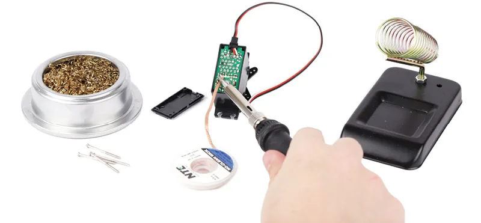
Should you not want to modify a servo and prefer to use a geared motor, some alternatives exist, but they all require some degree of improvisation to work with the projects in this book. While it might seem slightly easier or cheaper than modifying a servo, you’ll discover that the amount of effort necessary to make these motors work is actually fairly high.
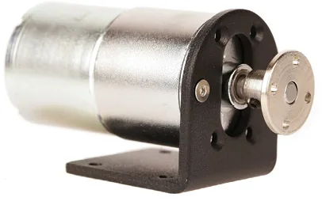
Nevertheless, you can find some ways to produce workable alternatives to the modified servo motors in Appendix A.